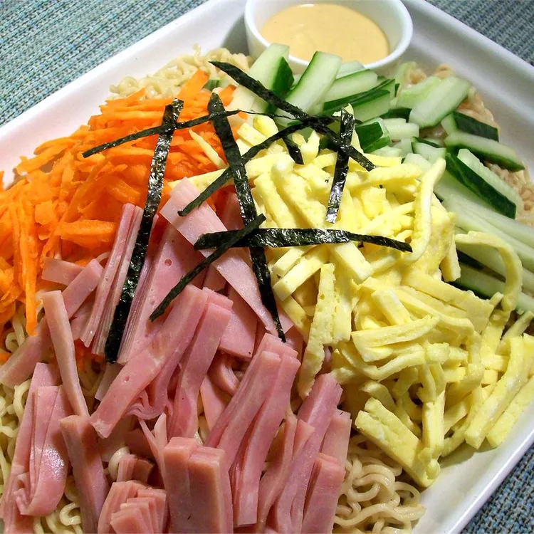

Hiyashi Chuka Noodles

The soup for this is phenomenal. Tastes so very much like what I remember from my years in Japan. It is such a refreshing meal in the heat & humidity! Love this version. So easy, and so tasty." —Beth Broadwater
Ingredients
- 5 tablespoons chicken stock
- 1 carrot, grated
- ¼ sheet nori, cut into thin slices
Steps
- Mix together chicken stock, soy sauce, vinegar, sugar, sesame oil, and chili oil in a small bowl, stirring until sugar dissolves. Set aside.
- Bring a saucepan of water to a boil. Cook ramen noodles in boiling water for 2 minutes. Drain immediately and refrigerate noodles until cold.
- Place cold noodles on serving plates. Top with separate piles of egg, cucumber, carrot, and ham. Pour soy sauce mixture over the top and sprinkle with nori. Serve with a touch of hot mustard on the side.